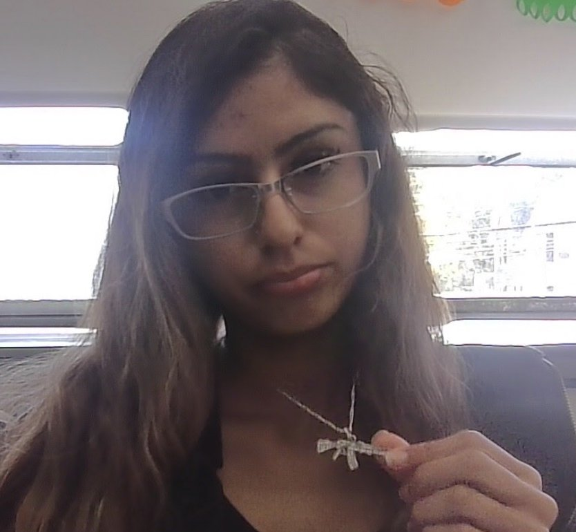
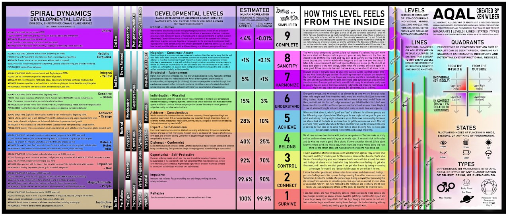

Revery
(beta) by Savannah Morrison
a label. contemporary art. a blog.
enlightenment for the collective conscience
4 pokes to go
the orb is keeping secrets. poke it.
revery (n.): a pleasant dream or thought
What lies beneath the conscious mind is a question my mind has pondered since the day I became aware of my existence.
As of 2026, I'm confused, curious and creative. My goal, my revery, is clarity and expression. This site is where I try to get there in public: art, half-finished theories, tools for being a human, and a void to throw your thoughts into.
I hope to build a creative community for people who love contemporary art. If you're reading this, you might already be one of us.
what is revery?
basically a safe space for dorks, freaks, and geeks
Revery is a label, a blog, and a slowly growing collection of contemporary art. Underneath all of it is one question: what is it like to be a mind, and what is going on underneath the part we're aware of?
On consciousness
Most of the time we live inside our thoughts without noticing them, the way a fish doesn't notice water. Every so often something pulls us back far enough to watch the mind instead of being it. You catch yourself mid-thought and wonder: who just noticed that?
That gap between the thinker and the watcher is where Revery lives. Philosophers have argued for centuries about whether there is a self doing the watching, or only more thoughts watching other thoughts. Psychologists study how the mind tells stories about itself, and how convincing those stories feel even when they're wrong. Astrologers and mystics built maps of the inner world long before anyone could scan a brain.
I don't think any one of these has the whole answer. Revery treats each one as a lens, a human tool, and asks what you can see through it that you couldn't before.
What you'll find here
Art and photography in the gallery. Guides to natal charts and chakras. Videos I actually learned from in sources. And the void, for when your head is too loud.
revery is a social organization. some features may be copyrighted.
gallery
three rooms. wander.
photography
The world as I catch it.
self portraits
Looking back at the one looking.
i just made sum BS
No concept. Just vibes. Respect it.
meet the creator
meet the owner

Hi, I'm Savannah, the mind behind Revery.
I don't define myself by my brain chemistry, yet the nature of myself is self-awareness and curiosity.
My experience
My brain hasn't always been easy to live in. I spent years feeling isolated, and somewhere in that quiet I started meditating. Meditation didn't give me answers. It gave me better questions: what am I for, and what is any of this?
My goal
I want to encourage awareness, growth and change, in myself first and then in anyone who wanders in here. I'm a philosopher and a mentor in the making, and if there's one thing I'm sure of, it's this:
I can help you think.
Draft: these sections are rebuilt from your original page. Paste your full text and I'll put your exact words back.
human tools
frameworks for understanding the thing you're living in
A body, a mind, a sky you were born under. None of these come with a manual, so here are a few unofficial ones: natal charts, chakras, and the videos below.


sources
no affiliation or paid promotion, only unbiased recommendations :)
comment 11/22: humanity is fucking stupid please develop a sense of awareness.
natal
send me your birth time and I'll read your chart. no judgment.
Astrology doesn't tell you what will happen. It's correlative, not definitive. Think of it like a doctor telling someone with prediabetes to cut back on sugar: it isn't a prophecy, it's a heads-up about where you're likely to struggle and where you have room to grow. A chart shows tendencies. What you do with them is up to you.
What is a natal chart?
A natal chart is a map of the sky at the exact moment and place you were born. It has four main parts:
Planets are the drives inside you: the Sun is your core self, the Moon your emotional needs, Venus how you love, Mars how you act.
Signs are the style each planet works in: a Mars in Capricorn pushes patiently, a Mars in Aries charges.
Houses are the twelve areas of life where it all plays out, from self and money to relationships, career and the unconscious.
Aspects are the angles between planets, showing which parts of you cooperate and which argue.
Read together, they're less a fortune and more a portrait: a symbolic language for a personality that's still being written.
How I read charts
I use the sidereal zodiac (Lahiri) with whole-sign houses, which lines the signs up with the constellations as they actually sit in the sky today. Most Western apps use the tropical zodiac, so your signs may shift back by about one. Both are valid traditions; just know which one you're reading.
Get your chart
chakras
a guide for dummies
Chakras come from Indian spiritual traditions: seven energy centres running from the base of the spine to the crown of the head, each tied to a part of life. Root is safety, sacral is pleasure and creativity, solar plexus is will, heart is love, throat is expression, third eye is intuition, crown is connection to something bigger. They aren't something a scan can find. They're a map, an old and surprisingly useful one, for noticing where you feel things.
Chakral imbalances: the root of chaos
What are unbalanced chakras? In the tradition, an imbalance is a disconnect between mind, body and soul: one area runs too hot, another shuts down. You might live entirely in your head and forget you have a body, or feel everything and be unable to say any of it.
How does this affect daily life? It shows up as confusion, restlessness, feeling stuck, or a body that's always braced. This is where the old map and modern science overlap: emotions you keep swallowing, like stress or anger, keep your nervous system switched on, and staying in that state for a long time really does wear on your body and mind.
How is trauma stored in the body? Ask a hippie pilates mom. (Kidding. Mostly. Start with the HealthyGamerGG video in sources.)
Chakras are a spiritual framework, not medicine. If something feels physically or mentally wrong, see a doctor or therapist too.
void
think think think. then let it go.
Type a thought that's taking up too much room. Press release. It leaves, and nothing is saved anywhere.
0 thoughts released
alchemy, manifestation, abstract thoughts, pseudoscience